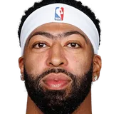

Dominic McGuire
2007-08 to 2012-13 · Career Map
 Washington,
Washington,  Sacramento,
Sacramento,  Charlotte,
Charlotte,  Golden State,
Golden State,  Toronto,
Toronto,  New Orleans,
New Orleans,  Indiana
Indiana
His best final NBA finish was #13 of 30, with the 2007-08 Washington Wizards. In his 342 games for 7 teams over 6 seasons they went 111–231 (32.5%), −120 games under .500, with an average final finish of 21.8.
Jump to: Record by opponent · Season by season · Teammate help
Compare Dominic McGuire with…
Suggested, same era and similar teammate help:

Final NBA finish, season by season
Title Finals Other playoffs Missed playoffs. #1 = champion; the dashed line is last place that season. Each point opens that season's final standings.
All 30 teams ranked in 2007-08, his best finish (#13)Teammate help
 Caron Butler1.01 season
Caron Butler1.01 season- Antawn Jamison1.01 season
 Klay Thompson0.21 season
Klay Thompson0.21 season
Career
Career records (W–L, W − L, with and without) include 2026-27 games through Nov. 23, 2026; season counts and finishes are through 2025-26. Each card opens its board in the same scope. How we count.

Latest completed seasons
Season by season
Newest first; every header sorts. Final NBA finish is the team's rank among all teams that season (#1 = champion) and opens that season's standings. "Without him" uses the team-season window; the span line counts only the games between his first and last game for the team.
| 2012-13 | #19 of 30 | 34–48 41.5% | Missed playoffs | 15 of 82 | 3–12 20.0% | 2–7 22.2%span: N/A, gap N/A | −2.2 | |
| 2012-13 | #26 of 30 | 27–55 32.9% | Missed playoffs | 9 of 82 | 2–7 22.2% | 5–8 38.5%span: 0–1, gap +22.2 | −16.2 | |
| 2012-13 | #4 of 30 | 49–32 60.5% | Lost conf finals 3–4 | 2 of 81 | 2–0 100.0% | 28–19 59.6%span: 0–1, gap +100.0 | +40.4 | |
| 2011-12 | #23 of 30 | 23–43 34.8% | Missed playoffs | 64 of 66 | 21–43 32.8% | 2–0 100.0%span: 2–0, gap −67.2 | −67.2 | |
| 2010-11 | #22 of 30 | 34–48 41.5% | Missed playoffs | 52 of 82 | 18–34 34.6% | 16–14 53.3%span: 12–6, gap −32.1 | −18.7 | |
| 2009-10 | #26 of 30 | 26–56 31.7% | Missed playoffs | 41 of 82 | 12–29 29.3% | 7–5 58.3%span: 5–4, gap −26.3 | −29.1 | |
| 2009-10 | #28 of 30 | 25–57 30.5% | Missed playoffs | 10 of 82 | 0–10 0.0% | 8–13 38.1%span: 6–3, gap −66.7 | −38.1 | |
| 2008-09 | #28 of 30 | 19–63 23.2% | Missed playoffs | 79 of 82 | 18–61 22.8% | 1–2 33.3%span: 1–2, gap −10.5 | −10.5 | |
| 2007-08 | #13 of 30 | 43–39 52.4% | Lost 1st round 2–4 | 70 of 82 | 35–35 50.0% | 8–4 66.7%span: 8–4, gap −16.7 | −16.7 |
On/off, starts and close games
From the lineup data, 1996-97 on. On/off is net points per 100 possessions with him on the floor minus off, a different unit from the win-rate gaps. Started and off the bench are team records in those games; close games are those within 5 points in the last 5 minutes with him on the floor.
| 2012-13 | −0.4 | 2–7 22.2% | 1–5 16.7% | 1–7 12.5% | |
| 2012-13 | −19.7 | N/A | 2–7 22.2% | 2–3 40.0% | |
| 2012-13 | −42.2 | 1–0 100.0% | 1–0 100.0% | N/A | |
| 2011-12 | −0.9 | 2–4 33.3% | 19–39 32.8% | 10–19 34.5% | |
| 2010-11 | +2.5 | 1–7 12.5% | 17–27 38.6% | 4–4 50.0% | |
| 2009-10 | −8.8 | N/A | 12–29 29.3% | 2–7 22.2% | |
| 2009-10 | −18.4 | 0–2 0.0% | 0–8 0.0% | N/A | |
| 2008-09 | −0.4 | 15–42 26.3% | 3–19 13.6% | 9–17 34.6% | |
| 2007-08 | −14.2 | 0–1 0.0% | 35–34 50.7% | 5–4 55.6% |
Teammate help by season
Help this season = Teammates Score points for honors won that season by teammates who shared a game with him, with every teammate that adds to it. Only honors won in that same season count. How help works.
- 2012-13
 Toronto
Toronto
 Jonas Valanciunas All-Rookie 2nd0.12515 g
Jonas Valanciunas All-Rookie 2nd0.12515 g
Help this season: 0.125 = 0.125 Jonas Valanciunas
Other teammates (no honors that season): Ed Davis 15 g, DeMar DeRozan 15 g, Jose Calderon 15 g, Amir Johnson 15 g, Andrea Bargnani 14 g, Terrence Ross 13 g, John Lucas III 12 g, Linas Kleiza 10 g, Kyle Lowry 9 g, Aaron Gray 7 g, Alan Anderson 5 g, Landry Fields 4 g, Quincy Acy 3 g
- 2012-13
 New Orleans
New Orleans

Anthony Davis All-Rookie 1st0.259 gHelp this season: 0.25 = 0.25 Anthony Davis
Other teammates (no honors that season): Roger Mason 9 g, Brian Roberts 9 g, Austin Rivers 9 g, Lance Thomas 9 g, Greivis Vasquez 9 g, Ryan Anderson 9 g, Robin Lopez 9 g, Xavier Henry 7 g, Al-Farouq Aminu 4 g, Jason Smith 3 g, Darius Miller 2 g, Eric Gordon 1 g
- 2012-13
 Indiana
Indiana
 Paul George All-NBA 3rdAll-StarAll-Def 2ndMIP3.751 g
Paul George All-NBA 3rdAll-StarAll-Def 2ndMIP3.751 g
Help this season: 3.75 = 3.75 Paul George
Other teammates (no honors that season): David West 2 g, Orlando Johnson 2 g, Lance Stephenson 2 g, Tyler Hansbrough 2 g, George Hill 2 g, Roy Hibbert 2 g, DJ Augustin 2 g, Ian Mahinmi 2 g, Gerald Green 2 g, Ben Hansbrough 1 g, Jeff Ayres 1 g
- 2011-12
 Golden State
Klay Thompson All-Rookie 1st0.2564 g
Golden State
Klay Thompson All-Rookie 1st0.2564 g
Help this season: 0.25 = 0.25 Klay Thompson
Other teammates (no honors that season): Brandon Rush 63 g, Dorell Wright 59 g, David Lee 55 g, Charles Jenkins 50 g, Nate Robinson 49 g, Andris Biedrins 45 g, Jeremy Tyler 40 g, Ekpe Udoh 36 g, Monta Ellis 35 g, Stephen Curry 24 g, Chris Wright 23 g, Richard Jefferson 22 g, Mickell Gladness 18 g, Kwame Brown 9 g and 4 more
- 2010-11
 CharlotteHelp this season: 0, no honored teammate
CharlotteHelp this season: 0, no honored teammate - 2009-10
 WashingtonHelp this season: 0, no honored teammate
WashingtonHelp this season: 0, no honored teammate - 2009-10
 Sacramento
Sacramento
 Tyreke Evans ROYAll-Rookie 1st0.756 g
Tyreke Evans ROYAll-Rookie 1st0.756 g
Help this season: 0.75 = 0.75 Tyreke Evans
Other teammates (no honors that season): Beno Udrih 10 g, Donte Greene 10 g, Carl Landry 10 g, Ime Udoka 9 g, Omri Casspi 9 g, Jason Thompson 9 g, Andres Nocioni 8 g, Spencer Hawes 8 g, Francisco Garcia 8 g, Sean May 6 g, Joey Dorsey 3 g, Garrett Temple 1 g
- 2008-09WashingtonHelp this season: 0, no honored teammate
- 2007-08Washington
Antawn Jamison All-Star167 gCaron Butler All-Star147 g
Help this season: 2 = 1 Antawn Jamison + 1 Caron Butler
Other teammates (no honors that season): DeShawn Stevenson 70 g, Andray Blatche 70 g, Roger Mason 69 g, Darius Songaila 68 g, Brendan Haywood 68 g, Nick Young 66 g, Antonio Daniels 60 g, Oleksiy Pecherov 31 g, Gilbert Arenas 8 g, Mike Wilks 4 g
Record against each opponent
Regular season, through 2025-26 (2026-27 games not included): 342 games, 111–231, against 30 franchises.
Grouped by franchise (named as today); game lists keep each team's name that season. Filters and the tab are kept in the URL, so a filtered view can be shared.
| Games list | |||||||
|---|---|---|---|---|---|---|---|
| 16 | 8–8 | 50.0% | 0 | 0–1 (1–2 in games) | 2007-08 to 2011-12 | ||
| 16 | 4–12 | 25.0% | −8 | N/A | 2007-08 to 2012-13 | ||
| 15 | 7–8 | 46.7% | −1 | N/A | 2007-08 to 2012-13 | ||
| 15 | 3–12 | 20.0% | −9 | N/A | 2007-08 to 2012-13 | ||
| 14 | 6–8 | 42.9% | −2 | N/A | 2007-08 to 2012-13 | ||
| 14 | 3–11 | 21.4% | −8 | N/A | 2007-08 to 2012-13 | ||
| 14 | 5–9 | 35.7% | −4 | N/A | 2007-08 to 2011-12 | ||
| 14 | 4–10 | 28.6% | −6 | N/A | 2007-08 to 2012-13 | ||
| 13 | 2–11 | 15.4% | −9 | N/A | 2007-08 to 2012-13 | ||
| 13 | 5–8 | 38.5% | −3 | N/A | 2007-08 to 2011-12 | ||
| 13 | 3–10 | 23.1% | −7 | N/A | 2007-08 to 2012-13 | ||
| 13 | 7–6 | 53.8% | +1 | N/A | 2007-08 to 2012-13 | ||
| 12 | 3–9 | 25.0% | −6 | N/A | 2007-08 to 2011-12 | ||
| 12 | 5–7 | 41.7% | −2 | N/A | 2007-08 to 2012-13 | ||
| 12 | 3–9 | 25.0% | −6 | N/A | 2007-08 to 2012-13 | ||
| 11 | 5–6 | 45.5% | −1 | N/A | 2007-08 to 2011-12 | ||
| 11 | 4–7 | 36.4% | −3 | N/A | 2007-08 to 2011-12 | ||
| 11 | 3–8 | 27.3% | −5 | N/A | 2007-08 to 2011-12 | ||
| 11 | 9–2 | 81.8% | +7 | N/A | 2007-08 to 2011-12 | ||
| 11 | 0–11 | 0.0% | −11 | N/A | 2007-08 to 2012-13 | ||
| 10 | 0–10 | 0.0% | −10 | N/A | 2007-08 to 2011-12 | ||
| 9 | 1–8 | 11.1% | −7 | N/A | 2007-08 to 2012-13 | ||
| 9 | 2–7 | 22.2% | −5 | N/A | 2007-08 to 2012-13 | ||
| 9 | 7–2 | 77.8% | +5 | N/A | 2007-08 to 2012-13 | ||
| 9 | 3–6 | 33.3% | −3 | N/A | 2007-08 to 2011-12 | ||
| 8 | 2–6 | 25.0% | −4 | N/A | 2008-09 to 2012-13 | ||
| 8 | 3–5 | 37.5% | −2 | N/A | 2007-08 to 2011-12 | ||
| 8 | 0–8 | 0.0% | −8 | N/A | 2007-08 to 2012-13 | ||
| 7 | 2–5 | 28.6% | −3 | N/A | 2007-08 to 2012-13 | ||
| 4 | 2–2 | 50.0% | 0 | N/A | 2010-11 to 2011-12 |
Rows add up to his career record in his games. A playoff series counts when he played in it; early round-robin games show as games only. How we count.
Playoffs, with and without him
| 2007-08 | Lost in the first round 2–4 to | #13 of 30 | 3 of 6 | 1–2 33.3% | 1–2 33.3% | 0.0 |
Arrival and departure
Team wins per 82 games the season before he arrived vs his first season there, and his last season vs the season after he left. He leaves a team only when his next season with games is for another team (or he never plays again); whole seasons he missed and came back from are one "Missed" row with the team's record without him. Per 82 so short seasons compare fairly. These are team records, not a measure of what he did.
| Left | after 2012-13 | 2012-13: 34–48 34.0 per 82 | 2013-14: 48–34 48.0 per 82 without him | +14.0 wins | |
| Left | after 2012-13 | 2012-13: 27–55 27.0 per 82 | 2013-14: 34–48 34.0 per 82 without him | +7.0 wins | |
| Left | after 2012-13 | 2012-13: 49–32 49.6 per 82 | 2013-14: 56–26 56.0 per 82 without him | +6.4 wins | |
| Arrived | 2012-13 | 2011-12: 23–43 28.6 per 82 | 2012-13: 34–48 34.0 per 82 | +5.4 wins | |
| Arrived | 2012-13 | 2011-12: 21–45 26.1 per 82 | 2012-13: 27–55 27.0 per 82 | +0.9 wins | |
| Arrived | 2012-13 | 2011-12: 42–24 52.2 per 82 | 2012-13: 49–32 49.6 per 82 | −2.6 wins | |
| Left | after 2011-12 | 2011-12: 23–43 28.6 per 82 | 2012-13: 47–35 47.0 per 82 without him | +18.4 wins | |
| Arrived | 2011-12 | 2010-11: 36–46 36.0 per 82 | 2011-12: 23–43 28.6 per 82 | −7.4 wins | |
| Left | after 2010-11 | 2010-11: 34–48 34.0 per 82 | 2011-12: 7–59 8.7 per 82 without him | −25.3 wins | |
| Arrived | 2010-11 | 2009-10: 44–38 44.0 per 82 | 2010-11: 34–48 34.0 per 82 | −10.0 wins | |
| Left | after 2009-10 | 2009-10: 26–56 26.0 per 82 | 2010-11: 23–59 23.0 per 82 without him | −3.0 wins | |
| Left | after 2009-10 | 2009-10: 25–57 25.0 per 82 | 2010-11: 24–58 24.0 per 82 without him | −1.0 wins | |
| Arrived | 2009-10 | 2008-09: 17–65 17.0 per 82 | 2009-10: 25–57 25.0 per 82 | +8.0 wins | |
| Debut | 2007-08 | 2006-07: 41–41 41.0 per 82 | 2007-08: 43–39 43.0 per 82 | +2.0 wins |
Seasons split between teams
Each team's record before his first game for it, inside his window (games with and without him) and after his last game, in the seasons he played for two or more teams.
| 2012-13 | Nov. 3, 2012 to Nov. 28, 2012 | N/A | 5–19 20.8% | 29–29 50.0% | 15 | |
| 2012-13 | Dec. 16, 2012 to Jan. 2, 2013 | 4–10 28.6% | 7–15 31.8% | 16–30 34.8% | 9 | |
| 2012-13 | Jan. 12, 2013 to Jan. 15, 2013 | 19–13 59.4% | 30–19 61.2% | N/A | 2 | |
| 2009-10 | Oct. 27, 2009 to Feb. 9, 2010 | N/A | 19–34 35.8% | 7–22 24.1% | 41 | |
| 2009-10 | Feb. 21, 2010 to March 28, 2010 | 17–34 33.3% | 8–23 25.8% | N/A | 10 |
Best duos
Team record in regular-season games both played, top 10 by win %, at least 50 games together.
 Antonio Daniels
34–37 47.9%
Antonio Daniels
34–37 47.9% Roger Mason
37–41 47.4%
Roger Mason
37–41 47.4%- Brendan Haywood 47–68 40.9%
- DeShawn Stevenson 49–83 37.1%
 DJ Augustin
20–34 37.0%
DJ Augustin
20–34 37.0% David Lee
20–35 36.4%
David Lee
20–35 36.4%- Darius Songaila 51–91 35.9%
- Andray Blatche 63–115 35.4%
 Boris Diaw
18–34 34.6%
Boris Diaw
18–34 34.6%- Antawn Jamison 61–117 34.3%
With and without his teammates
His 12 teammates with the most regular-season games together. "Together" is the team's record in the games both played for it; "Without him" is the team's record in the games Dominic McGuire played for that team while the teammate was on it (between the teammate's first and last game for the team, the appearance span) and the teammate did not play. Fewer than 20 games without him: no gap. Games through Nov. 23, 2026. How we count.
 Nick YoungWashington 2007-08 to 2009-10
Nick YoungWashington 2007-08 to 2009-10- Together
- 59–120 33.0%
- Without him
- 5–5 50.0%
- Gap
- Too few games without him
- Andray BlatcheWashington 2007-08 to 2009-10
- Together
- 63–115 35.4%
- Without him
- 2–8 20.0%
- Gap
- Too few games without him
- Antawn JamisonWashington 2007-08 to 2009-10
- Together
- 61–117 34.3%
- Without him
- 2–0 100.0%
- Gap
- Too few games without him
- Caron ButlerWashington 2007-08 to 2009-10
- Together
- 50–100 33.3%
- Without him
- 13–24 35.1%
- Gap
- 1.8 points higher
- Darius SongailaWashington 2007-08 to 2008-09
- Together
- 51–91 35.9%
- Without him
- 2–5 28.6%
- Gap
- Too few games without him
- DeShawn StevensonWashington 2007-08 to 2009-10
- Together
- 49–83 37.1%
- Without him
- 7–16 30.4%
- Gap
- 6.7 points lower
- Brendan HaywoodWashington 2007-08 to 2009-10
- Together
- 47–68 40.9%
- Without him
- 2–0 100.0%
- Gap
- Too few games without him
 JaVale McGeeWashington 2008-09 to 2009-10
JaVale McGeeWashington 2008-09 to 2009-10- Together
- 21–73 22.3%
- Without him
- 9–17 34.6%
- Gap
- 12.3 points higher
- Roger MasonWashington 2007-08; New Orleans 2012-13
- Together
- 37–41 47.4%
- Without him
- 0–1 0.0%
- Gap
- Too few games without him
- Antonio DanielsWashington 2007-08 to 2008-09
- Together
- 34–37 47.9%
- Without him
- 4–11 26.7%
- Gap
- Too few games without him
- Klay ThompsonGolden State 2011-12
- Together
- 21–43 32.8%
- Without him
- N/A N/A
- Gap
- Too few games without him
 Brandon RushGolden State 2011-12
Brandon RushGolden State 2011-12- Together
- 21–42 33.3%
- Without him
- N/A N/A
- Gap
- Too few games without him